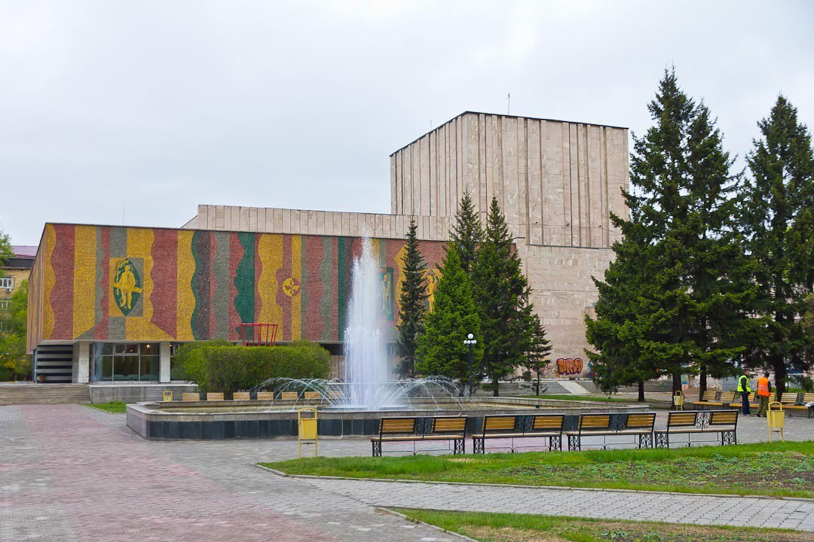
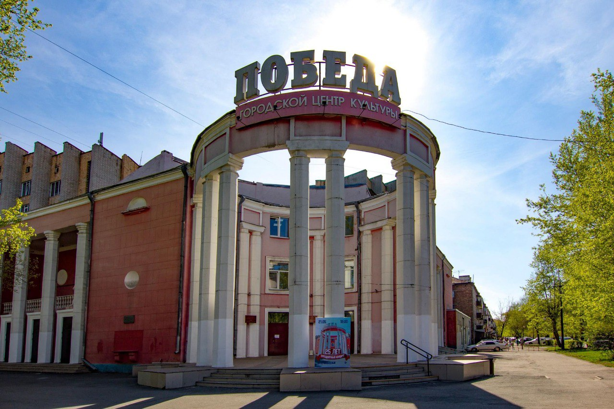
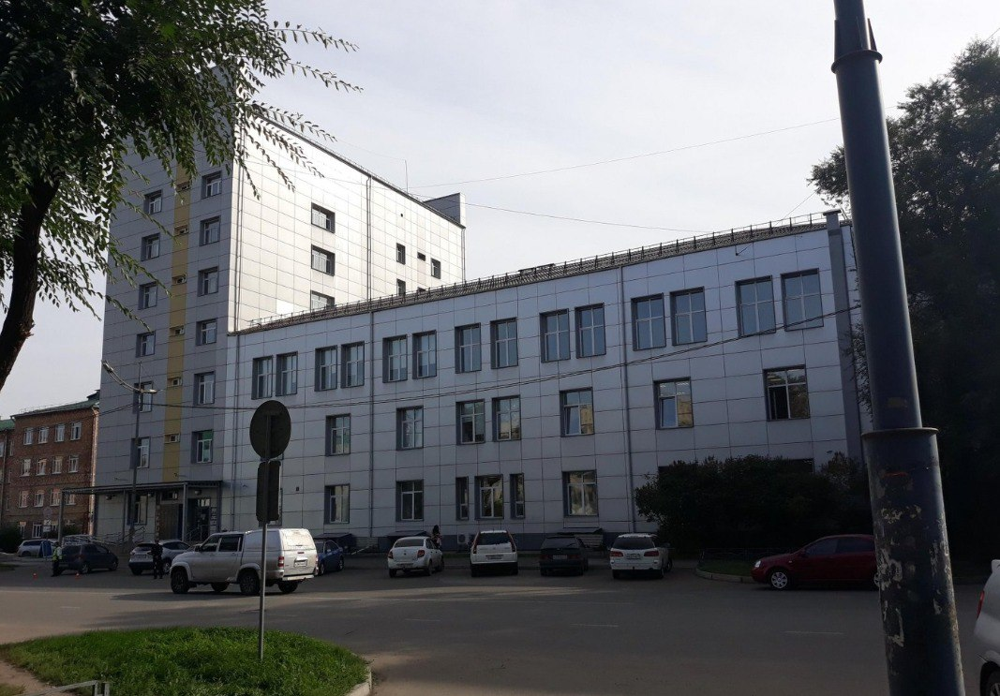
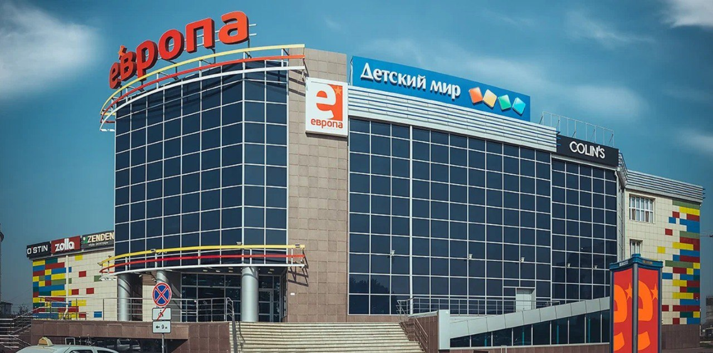

<!DOCTYPE html>
<html>
<head>
    
    <meta http-equiv="content-type" content="text/html; charset=UTF-8" />
    
        <script>
            L_NO_TOUCH = false;
            L_DISABLE_3D = false;
        </script>
    
    <style>html, body {width: 100%;height: 100%;margin: 0;padding: 0;}</style>
    <style>#map {position:absolute;top:0;bottom:0;right:0;left:0;}</style>
    <script src="https://cdn.jsdelivr.net/npm/leaflet@1.9.3/dist/leaflet.js"></script>
    <script src="https://code.jquery.com/jquery-3.7.1.min.js"></script>
    <script src="https://cdn.jsdelivr.net/npm/bootstrap@5.2.2/dist/js/bootstrap.bundle.min.js"></script>
    <script src="https://cdnjs.cloudflare.com/ajax/libs/Leaflet.awesome-markers/2.0.2/leaflet.awesome-markers.js"></script>
    <link rel="stylesheet" href="https://cdn.jsdelivr.net/npm/leaflet@1.9.3/dist/leaflet.css"/>
    <link rel="stylesheet" href="https://cdn.jsdelivr.net/npm/bootstrap@5.2.2/dist/css/bootstrap.min.css"/>
    <link rel="stylesheet" href="https://netdna.bootstrapcdn.com/bootstrap/3.0.0/css/bootstrap-glyphicons.css"/>
    <link rel="stylesheet" href="https://cdn.jsdelivr.net/npm/@fortawesome/fontawesome-free@6.2.0/css/all.min.css"/>
    <link rel="stylesheet" href="https://cdnjs.cloudflare.com/ajax/libs/Leaflet.awesome-markers/2.0.2/leaflet.awesome-markers.css"/>
    <link rel="stylesheet" href="https://cdn.jsdelivr.net/gh/python-visualization/folium/folium/templates/leaflet.awesome.rotate.min.css"/>
    
            <meta name="viewport" content="width=device-width,
                initial-scale=1.0, maximum-scale=1.0, user-scalable=no" />
            <style>
                #map_43052b7e2ec6323a6887b824b7c06d6e {
                    position: relative;
                    width: 100.0%;
                    height: 100.0%;
                    left: 0.0%;
                    top: 0.0%;
                }
                .leaflet-container { font-size: 1rem; }
            </style>
        
</head>
<body>
    
    
            <div class="folium-map" id="map_43052b7e2ec6323a6887b824b7c06d6e" ></div>
        
</body>
<script>
    
    
            var map_43052b7e2ec6323a6887b824b7c06d6e = L.map(
                "map_43052b7e2ec6323a6887b824b7c06d6e",
                {
                    center: [53.722279, 91.443704],
                    crs: L.CRS.EPSG3857,
                    zoom: 16,
                    zoomControl: true,
                    preferCanvas: false,
                    attributionControl: 0,
                }
            );

            

        
    
            var tile_layer_b8bb49c2e8e29dd0093baeefe27aee31 = L.tileLayer(
                "https://{s}.tile-cyclosm.openstreetmap.fr/cyclosm/{z}/{x}/{y}.png",
                {"attribution": "\u003ca href=\"https://github.com/cyclosm/cyclosm-cartocss-style/releases\" title=\"CyclOSM - Open Bicycle render\"\u003eCyclOSM\u003c/a\u003e | Map data: \u0026copy; \u003ca href=\"https://www.openstreetmap.org/copyright\"\u003eOpenStreetMap\u003c/a\u003e contributors", "detectRetina": false, "maxNativeZoom": 20, "maxZoom": 20, "minZoom": 0, "noWrap": false, "opacity": 1, "subdomains": "abc", "tms": false}
            );
        
    
            tile_layer_b8bb49c2e8e29dd0093baeefe27aee31.addTo(map_43052b7e2ec6323a6887b824b7c06d6e);
        
    
            var tile_layer_3676514a6c94f6cb80b943c3ab8d3787 = L.tileLayer(
                "https://server.arcgisonline.com/ArcGIS/rest/services/World_Imagery/MapServer/tile/{z}/{y}/{x}",
                {"attribution": "Tiles \u0026copy; Esri \u0026mdash; Source: Esri, i-cubed, USDA, USGS, AEX, GeoEye, Getmapping, Aerogrid, IGN, IGP, UPR-EGP, and the GIS User Community", "detectRetina": false, "maxZoom": 18, "minZoom": 0, "noWrap": false, "opacity": 1, "subdomains": "abc", "tms": false}
            );
        
    
            tile_layer_3676514a6c94f6cb80b943c3ab8d3787.addTo(map_43052b7e2ec6323a6887b824b7c06d6e);
        
    
            var tile_layer_2181016c97171d97f6d0a1c3d68bea7b = L.tileLayer(
                "https://tile.openstreetmap.org/{z}/{x}/{y}.png",
                {"attribution": "\u0026copy; \u003ca href=\"https://www.openstreetmap.org/copyright\"\u003eOpenStreetMap\u003c/a\u003e contributors", "detectRetina": false, "maxNativeZoom": 19, "maxZoom": 19, "minZoom": 0, "noWrap": false, "opacity": 1, "subdomains": "abc", "tms": false}
            );
        
    
            tile_layer_2181016c97171d97f6d0a1c3d68bea7b.addTo(map_43052b7e2ec6323a6887b824b7c06d6e);
        
    
            var feature_group_55b757e3617f0a1726ed8d710c31e9c8 = L.featureGroup(
                {}
            );
        
    
            var marker_75e32186ec4bd82298e3741e4e76d677 = L.marker(
                [53.717533, 91.445048],
                {}
            ).addTo(feature_group_55b757e3617f0a1726ed8d710c31e9c8);
        
    
            var icon_a744bfa0174a057f913b93da2c077f1e = L.AwesomeMarkers.icon(
                {"extraClasses": "fa-rotate-0", "icon": "seedling", "iconColor": "white", "markerColor": "green", "prefix": "fa"}
            );
            marker_75e32186ec4bd82298e3741e4e76d677.setIcon(icon_a744bfa0174a057f913b93da2c077f1e);
        
    
        var popup_a3cec721da9692f4e6235556b5d2b448 = L.popup({"maxWidth": "100%"});

        
            
                var html_565a586cbe2f55a8a317a3775041d5ee = $(`<div id="html_565a586cbe2f55a8a317a3775041d5ee" style="width: 100.0%; height: 100.0%;"><b>Проективное покрытие: 60%<br/>Высота газона: 0.3 см</b></div>`)[0];
                popup_a3cec721da9692f4e6235556b5d2b448.setContent(html_565a586cbe2f55a8a317a3775041d5ee);
            
        

        marker_75e32186ec4bd82298e3741e4e76d677.bindPopup(popup_a3cec721da9692f4e6235556b5d2b448)
        ;

        
    
    
            var marker_b6c42ae63dfb3f376a11dbe6ce806886 = L.marker(
                [53.717532, 91.445518],
                {}
            ).addTo(feature_group_55b757e3617f0a1726ed8d710c31e9c8);
        
    
            var icon_ef8ba70e7a2885730f5f5b273c147575 = L.AwesomeMarkers.icon(
                {"extraClasses": "fa-rotate-0", "icon": "seedling", "iconColor": "white", "markerColor": "green", "prefix": "fa"}
            );
            marker_b6c42ae63dfb3f376a11dbe6ce806886.setIcon(icon_ef8ba70e7a2885730f5f5b273c147575);
        
    
        var popup_6c7888a520ac98d91150d5534d46155e = L.popup({"maxWidth": "100%"});

        
            
                var html_e57137ec43eed67751a4aa85dbd36c66 = $(`<div id="html_e57137ec43eed67751a4aa85dbd36c66" style="width: 100.0%; height: 100.0%;"><b>Проективное покрытие: 60%<br/>Высота газона: 0.3 см</b></div>`)[0];
                popup_6c7888a520ac98d91150d5534d46155e.setContent(html_e57137ec43eed67751a4aa85dbd36c66);
            
        

        marker_b6c42ae63dfb3f376a11dbe6ce806886.bindPopup(popup_6c7888a520ac98d91150d5534d46155e)
        ;

        
    
    
            var marker_a362172f689b145072d535f784238ebc = L.marker(
                [53.717847, 91.444995],
                {}
            ).addTo(feature_group_55b757e3617f0a1726ed8d710c31e9c8);
        
    
            var icon_a215204b60daebc3421a7a414d782c92 = L.AwesomeMarkers.icon(
                {"extraClasses": "fa-rotate-0", "icon": "seedling", "iconColor": "white", "markerColor": "green", "prefix": "fa"}
            );
            marker_a362172f689b145072d535f784238ebc.setIcon(icon_a215204b60daebc3421a7a414d782c92);
        
    
        var popup_aef256d3b147521e3e267385d2bdf9c4 = L.popup({"maxWidth": "100%"});

        
            
                var html_d27492de52e3a2e2849cfb5092051d33 = $(`<div id="html_d27492de52e3a2e2849cfb5092051d33" style="width: 100.0%; height: 100.0%;"><b>Проективное покрытие: 50%<br/>Высота газона: 0.3 см</b></div>`)[0];
                popup_aef256d3b147521e3e267385d2bdf9c4.setContent(html_d27492de52e3a2e2849cfb5092051d33);
            
        

        marker_a362172f689b145072d535f784238ebc.bindPopup(popup_aef256d3b147521e3e267385d2bdf9c4)
        ;

        
    
    
            var marker_e9ba8d5254565e2d2919663f9b604b5b = L.marker(
                [53.717955, 91.445152],
                {}
            ).addTo(feature_group_55b757e3617f0a1726ed8d710c31e9c8);
        
    
            var icon_c9c384acccf6d01050f4729edca7e178 = L.AwesomeMarkers.icon(
                {"extraClasses": "fa-rotate-0", "icon": "seedling", "iconColor": "white", "markerColor": "green", "prefix": "fa"}
            );
            marker_e9ba8d5254565e2d2919663f9b604b5b.setIcon(icon_c9c384acccf6d01050f4729edca7e178);
        
    
        var popup_a5e3b2f945a06b305f2a549dd96aadf1 = L.popup({"maxWidth": "100%"});

        
            
                var html_d16d25392ea0eda7ae7e97186d4bdc62 = $(`<div id="html_d16d25392ea0eda7ae7e97186d4bdc62" style="width: 100.0%; height: 100.0%;"><b>Проективное покрытие: 90%<br/>Высота газона: 0.3 см</b></div>`)[0];
                popup_a5e3b2f945a06b305f2a549dd96aadf1.setContent(html_d16d25392ea0eda7ae7e97186d4bdc62);
            
        

        marker_e9ba8d5254565e2d2919663f9b604b5b.bindPopup(popup_a5e3b2f945a06b305f2a549dd96aadf1)
        ;

        
    
    
            var poly_line_aec233bf4c8964367fac9120d07ce824 = L.polyline(
                [[53.726186, 91.44252], [53.734935, 91.43993], [53.733805, 91.440309], [53.727508, 91.442126], [53.7248349, 91.442895], [53.724819, 91.442882], [53.722302, 91.44362], [53.717319, 91.445112]],
                {"bubblingMouseEvents": true, "color": "#ff5200", "dashArray": null, "dashOffset": null, "fill": false, "fillColor": "#ff5200", "fillOpacity": 0.2, "fillRule": "evenodd", "lineCap": "round", "lineJoin": "round", "noClip": false, "opacity": 1.0, "smoothFactor": 1.0, "stroke": true, "weight": 5}
            ).addTo(feature_group_55b757e3617f0a1726ed8d710c31e9c8);
        
    
        var popup_ae99775d4dfee32855bc065f91f581ec = L.popup({"maxWidth": "100%"});

        
            
                var html_a1b87c05ff3834f0992dd5bfd7bf8e63 = $(`<div id="html_a1b87c05ff3834f0992dd5bfd7bf8e63" style="width: 100.0%; height: 100.0%;"><h1>Щетинкина</h1>               </div>`)[0];
                popup_ae99775d4dfee32855bc065f91f581ec.setContent(html_a1b87c05ff3834f0992dd5bfd7bf8e63);
            
        

        poly_line_aec233bf4c8964367fac9120d07ce824.bindPopup(popup_ae99775d4dfee32855bc065f91f581ec)
        ;

        
    
    
            poly_line_aec233bf4c8964367fac9120d07ce824.bindTooltip(
                `<div>
                     Улица Щетинкина
                 </div>`,
                {"sticky": true}
            );
        
    
            feature_group_55b757e3617f0a1726ed8d710c31e9c8.addTo(map_43052b7e2ec6323a6887b824b7c06d6e);
        
    
            var feature_group_f16d37dabea009b35447f8cfdd94cdd2 = L.featureGroup(
                {}
            );
        
    
            var marker_3396892847b9449af045b40035009950 = L.marker(
                [53.721368, 91.433337],
                {}
            ).addTo(feature_group_f16d37dabea009b35447f8cfdd94cdd2);
        
    
            var icon_71375163632d4b7cd52da1274f1e4f39 = L.AwesomeMarkers.icon(
                {"extraClasses": "fa-rotate-0", "icon": "seedling", "iconColor": "white", "markerColor": "green", "prefix": "fa"}
            );
            marker_3396892847b9449af045b40035009950.setIcon(icon_71375163632d4b7cd52da1274f1e4f39);
        
    
        var popup_a253434696d7d1819f284556ab158128 = L.popup({"maxWidth": "100%"});

        
            
                var html_1759bafc213ce71d62781a2babd61f90 = $(`<div id="html_1759bafc213ce71d62781a2babd61f90" style="width: 100.0%; height: 100.0%;"><b>Проективное покрытие: 70%<br/>Высота газона: 0.3 см</b></div>`)[0];
                popup_a253434696d7d1819f284556ab158128.setContent(html_1759bafc213ce71d62781a2babd61f90);
            
        

        marker_3396892847b9449af045b40035009950.bindPopup(popup_a253434696d7d1819f284556ab158128)
        ;

        
    
    
            var marker_2e837b470532c0af4efc66671250b575 = L.marker(
                [53.721287, 91.433376],
                {}
            ).addTo(feature_group_f16d37dabea009b35447f8cfdd94cdd2);
        
    
            var icon_457247921b5146c330abbacf1a9cc8ab = L.AwesomeMarkers.icon(
                {"extraClasses": "fa-rotate-0", "icon": "seedling", "iconColor": "white", "markerColor": "green", "prefix": "fa"}
            );
            marker_2e837b470532c0af4efc66671250b575.setIcon(icon_457247921b5146c330abbacf1a9cc8ab);
        
    
        var popup_1307fdc05760c2917aec71b3c3791347 = L.popup({"maxWidth": "100%"});

        
            
                var html_9c1d11e25d6838670388487510f55047 = $(`<div id="html_9c1d11e25d6838670388487510f55047" style="width: 100.0%; height: 100.0%;"><b>Проективное покрытие: 90%<br/>Высота газона: 0.3 см</b></div>`)[0];
                popup_1307fdc05760c2917aec71b3c3791347.setContent(html_9c1d11e25d6838670388487510f55047);
            
        

        marker_2e837b470532c0af4efc66671250b575.bindPopup(popup_1307fdc05760c2917aec71b3c3791347)
        ;

        
    
    
            var marker_5aa1400cc2cea95a534b7b53f2d4926b = L.marker(
                [53.721402, 91.433709],
                {}
            ).addTo(feature_group_f16d37dabea009b35447f8cfdd94cdd2);
        
    
            var icon_5d47ddc32e37ac8b5a4cced051d7da80 = L.AwesomeMarkers.icon(
                {"extraClasses": "fa-rotate-0", "icon": "seedling", "iconColor": "white", "markerColor": "green", "prefix": "fa"}
            );
            marker_5aa1400cc2cea95a534b7b53f2d4926b.setIcon(icon_5d47ddc32e37ac8b5a4cced051d7da80);
        
    
        var popup_5d20c797c5925cec7aa5f4d10709ecf7 = L.popup({"maxWidth": "100%"});

        
            
                var html_eb49f2a89b574636ed588d1d0b9df7cb = $(`<div id="html_eb49f2a89b574636ed588d1d0b9df7cb" style="width: 100.0%; height: 100.0%;"><b>Проективное покрытие: 80%<br/>Высота газона: 0.3 см</b></div>`)[0];
                popup_5d20c797c5925cec7aa5f4d10709ecf7.setContent(html_eb49f2a89b574636ed588d1d0b9df7cb);
            
        

        marker_5aa1400cc2cea95a534b7b53f2d4926b.bindPopup(popup_5d20c797c5925cec7aa5f4d10709ecf7)
        ;

        
    
    
            var marker_7474a3c153aadbb0b8a1dc3eb21354f6 = L.marker(
                [53.721323, 91.433744],
                {}
            ).addTo(feature_group_f16d37dabea009b35447f8cfdd94cdd2);
        
    
            var icon_f32dbf3d0beb154e0a55afb88162f83a = L.AwesomeMarkers.icon(
                {"extraClasses": "fa-rotate-0", "icon": "seedling", "iconColor": "white", "markerColor": "green", "prefix": "fa"}
            );
            marker_7474a3c153aadbb0b8a1dc3eb21354f6.setIcon(icon_f32dbf3d0beb154e0a55afb88162f83a);
        
    
        var popup_61ec1dc9c144e9817876abf24c3d684c = L.popup({"maxWidth": "100%"});

        
            
                var html_036c9e86427d30b76fa2856a3bfdf86b = $(`<div id="html_036c9e86427d30b76fa2856a3bfdf86b" style="width: 100.0%; height: 100.0%;"><b>Проективное покрытие: 90%<br/>Высота газона: 0.3 см</b></div>`)[0];
                popup_61ec1dc9c144e9817876abf24c3d684c.setContent(html_036c9e86427d30b76fa2856a3bfdf86b);
            
        

        marker_7474a3c153aadbb0b8a1dc3eb21354f6.bindPopup(popup_61ec1dc9c144e9817876abf24c3d684c)
        ;

        
    
    
            var poly_line_054f6673cb65bd2a712e39f62b1b6be0 = L.polyline(
                [[53.7211, 91.4333], [53.722755, 91.4495], [53.723056, 91.4539], [53.7234, 91.4565]],
                {"bubblingMouseEvents": true, "color": "#ff5200", "dashArray": null, "dashOffset": null, "fill": false, "fillColor": "#ff5200", "fillOpacity": 0.2, "fillRule": "evenodd", "lineCap": "round", "lineJoin": "round", "noClip": false, "opacity": 1.0, "smoothFactor": 1.0, "stroke": true, "weight": 5}
            ).addTo(feature_group_f16d37dabea009b35447f8cfdd94cdd2);
        
    
        var popup_dccc2ba9eda5ab139a350a3b7b2d4204 = L.popup({"maxWidth": "100%"});

        
            
                var html_ec54ab183f5201020a15d2b7586e5815 = $(`<div id="html_ec54ab183f5201020a15d2b7586e5815" style="width: 100.0%; height: 100.0%;"><h1>Проспект Ленина</h1>               </div>`)[0];
                popup_dccc2ba9eda5ab139a350a3b7b2d4204.setContent(html_ec54ab183f5201020a15d2b7586e5815);
            
        

        poly_line_054f6673cb65bd2a712e39f62b1b6be0.bindPopup(popup_dccc2ba9eda5ab139a350a3b7b2d4204)
        ;

        
    
    
            poly_line_054f6673cb65bd2a712e39f62b1b6be0.bindTooltip(
                `<div>
                     Проспект Ленина
                 </div>`,
                {"sticky": true}
            );
        
    
            feature_group_f16d37dabea009b35447f8cfdd94cdd2.addTo(map_43052b7e2ec6323a6887b824b7c06d6e);
        
    
            var feature_group_3a1f758554a39e26a6c7458cb5d4f910 = L.featureGroup(
                {}
            );
        
    
            var marker_c0be5ee76cf9b106caef89ebabd47562 = L.marker(
                [53.723926, 91.432816],
                {}
            ).addTo(feature_group_3a1f758554a39e26a6c7458cb5d4f910);
        
    
            var icon_9a649f09c80ac95cdba32d9c4fc00011 = L.AwesomeMarkers.icon(
                {"extraClasses": "fa-rotate-0", "icon": "seedling", "iconColor": "white", "markerColor": "green", "prefix": "fa"}
            );
            marker_c0be5ee76cf9b106caef89ebabd47562.setIcon(icon_9a649f09c80ac95cdba32d9c4fc00011);
        
    
        var popup_c88321aadb24f1ba7b71434e1350be78 = L.popup({"maxWidth": "100%"});

        
            
                var html_45e5cb46f00b463f0bd4cbe45f1e9474 = $(`<div id="html_45e5cb46f00b463f0bd4cbe45f1e9474" style="width: 100.0%; height: 100.0%;"><b>Проективное покрытие: 70%<br/>Высота газона: 0.3 см</b></div>`)[0];
                popup_c88321aadb24f1ba7b71434e1350be78.setContent(html_45e5cb46f00b463f0bd4cbe45f1e9474);
            
        

        marker_c0be5ee76cf9b106caef89ebabd47562.bindPopup(popup_c88321aadb24f1ba7b71434e1350be78)
        ;

        
    
    
            var marker_1721d2575712652b68a568006ba0905e = L.marker(
                [53.723793, 91.432967],
                {}
            ).addTo(feature_group_3a1f758554a39e26a6c7458cb5d4f910);
        
    
            var icon_c6fec99f026454e84ecb328dd20fab2f = L.AwesomeMarkers.icon(
                {"extraClasses": "fa-rotate-0", "icon": "seedling", "iconColor": "white", "markerColor": "green", "prefix": "fa"}
            );
            marker_1721d2575712652b68a568006ba0905e.setIcon(icon_c6fec99f026454e84ecb328dd20fab2f);
        
    
        var popup_211f17b71f5bd27c651b2f5f55754dcb = L.popup({"maxWidth": "100%"});

        
            
                var html_7424f4006e77d79dc3f621814565183f = $(`<div id="html_7424f4006e77d79dc3f621814565183f" style="width: 100.0%; height: 100.0%;"><b>Проективное покрытие: 100%<br/>Высота газона: 0.3 см</b></div>`)[0];
                popup_211f17b71f5bd27c651b2f5f55754dcb.setContent(html_7424f4006e77d79dc3f621814565183f);
            
        

        marker_1721d2575712652b68a568006ba0905e.bindPopup(popup_211f17b71f5bd27c651b2f5f55754dcb)
        ;

        
    
    
            var marker_960a895619b16ef6788f98f66a2d92a8 = L.marker(
                [53.723968, 91.4336],
                {}
            ).addTo(feature_group_3a1f758554a39e26a6c7458cb5d4f910);
        
    
            var icon_764a000b4019ee74eaf3c62e22ad7cc2 = L.AwesomeMarkers.icon(
                {"extraClasses": "fa-rotate-0", "icon": "seedling", "iconColor": "white", "markerColor": "green", "prefix": "fa"}
            );
            marker_960a895619b16ef6788f98f66a2d92a8.setIcon(icon_764a000b4019ee74eaf3c62e22ad7cc2);
        
    
        var popup_594fd45dad632f0eaec27fb701ff158e = L.popup({"maxWidth": "100%"});

        
            
                var html_17fff80a3e239b2615a7e2a59d04f429 = $(`<div id="html_17fff80a3e239b2615a7e2a59d04f429" style="width: 100.0%; height: 100.0%;"><b>Проективное покрытие: 40%<br/>Высота газона: 0.3 см</b></div>`)[0];
                popup_594fd45dad632f0eaec27fb701ff158e.setContent(html_17fff80a3e239b2615a7e2a59d04f429);
            
        

        marker_960a895619b16ef6788f98f66a2d92a8.bindPopup(popup_594fd45dad632f0eaec27fb701ff158e)
        ;

        
    
    
            var marker_703e4e96e765b73af1c06e757145d435 = L.marker(
                [53.723867, 91.433619],
                {}
            ).addTo(feature_group_3a1f758554a39e26a6c7458cb5d4f910);
        
    
            var icon_9224776769aa5c733f038defea809145 = L.AwesomeMarkers.icon(
                {"extraClasses": "fa-rotate-0", "icon": "seedling", "iconColor": "white", "markerColor": "green", "prefix": "fa"}
            );
            marker_703e4e96e765b73af1c06e757145d435.setIcon(icon_9224776769aa5c733f038defea809145);
        
    
        var popup_f4d254454bd3d92b22d8c9a35accaa4f = L.popup({"maxWidth": "100%"});

        
            
                var html_5b4bc98fe9bf2ed9f0ed612c01f4c937 = $(`<div id="html_5b4bc98fe9bf2ed9f0ed612c01f4c937" style="width: 100.0%; height: 100.0%;"><b>Проективное покрытие: 50%<br/>Высота газона: 0.3 см</b></div>`)[0];
                popup_f4d254454bd3d92b22d8c9a35accaa4f.setContent(html_5b4bc98fe9bf2ed9f0ed612c01f4c937);
            
        

        marker_703e4e96e765b73af1c06e757145d435.bindPopup(popup_f4d254454bd3d92b22d8c9a35accaa4f)
        ;

        
    
    
            var poly_line_2e358c7e898fdac50da253561632e99c = L.polyline(
                [[53.723808, 91.432518], [53.724108, 91.435558], [53.724206, 91.436697], [53.724223, 91.436802], [53.724372, 91.437974], [53.724412, 91.438316], [53.72466, 91.440872], [53.724754, 91.4417], [53.724843, 91.442738], [53.724854, 91.442893], [53.724857, 91.442936], [53.725037, 91.445045], [53.725465, 91.449354], [53.725606, 91.450948], [53.725824, 91.453085], [53.72584, 91.453251], [53.725965, 91.454592], [53.726027, 91.455169]],
                {"bubblingMouseEvents": true, "color": "#ff5200", "dashArray": null, "dashOffset": null, "fill": false, "fillColor": "#ff5200", "fillOpacity": 0.2, "fillRule": "evenodd", "lineCap": "round", "lineJoin": "round", "noClip": false, "opacity": 1.0, "smoothFactor": 1.0, "stroke": true, "weight": 5}
            ).addTo(feature_group_3a1f758554a39e26a6c7458cb5d4f910);
        
    
        var popup_00b4f4ef4a52d1c3c0190a9c0762a8b3 = L.popup({"maxWidth": "100%"});

        
            
                var html_8ae84bc731dd895616379244a54ddc22 = $(`<div id="html_8ae84bc731dd895616379244a54ddc22" style="width: 100.0%; height: 100.0%;"><h1>Проспект Ленина</h1>               </div>`)[0];
                popup_00b4f4ef4a52d1c3c0190a9c0762a8b3.setContent(html_8ae84bc731dd895616379244a54ddc22);
            
        

        poly_line_2e358c7e898fdac50da253561632e99c.bindPopup(popup_00b4f4ef4a52d1c3c0190a9c0762a8b3)
        ;

        
    
    
            poly_line_2e358c7e898fdac50da253561632e99c.bindTooltip(
                `<div>
                     Улица Чертыгашева
                 </div>`,
                {"sticky": true}
            );
        
    
            feature_group_3a1f758554a39e26a6c7458cb5d4f910.addTo(map_43052b7e2ec6323a6887b824b7c06d6e);
        
    
            var feature_group_1fae3c1cff51eaa07c7db43929b98257 = L.featureGroup(
                {}
            );
        
    
            var marker_1b3093a70dbf3fb11fb1edf2f5e730d6 = L.marker(
                [53.735108, 91.440868],
                {}
            ).addTo(feature_group_1fae3c1cff51eaa07c7db43929b98257);
        
    
            var icon_9161a2ee36ec8cd4d88bd493f4c49c78 = L.AwesomeMarkers.icon(
                {"extraClasses": "fa-rotate-0", "icon": "seedling", "iconColor": "white", "markerColor": "green", "prefix": "fa"}
            );
            marker_1b3093a70dbf3fb11fb1edf2f5e730d6.setIcon(icon_9161a2ee36ec8cd4d88bd493f4c49c78);
        
    
        var popup_6e2b229a7fbf651f1a57097aac61cec2 = L.popup({"maxWidth": "100%"});

        
            
                var html_7218b066f17298d959978854bc55f571 = $(`<div id="html_7218b066f17298d959978854bc55f571" style="width: 100.0%; height: 100.0%;"><b>Проективное покрытие: 90%<br/>Высота газона: 0.3 см</b></div>`)[0];
                popup_6e2b229a7fbf651f1a57097aac61cec2.setContent(html_7218b066f17298d959978854bc55f571);
            
        

        marker_1b3093a70dbf3fb11fb1edf2f5e730d6.bindPopup(popup_6e2b229a7fbf651f1a57097aac61cec2)
        ;

        
    
    
            var marker_104bfa7f35fb677e08b86d9d4b28b05f = L.marker(
                [53.735035, 91.440925],
                {}
            ).addTo(feature_group_1fae3c1cff51eaa07c7db43929b98257);
        
    
            var icon_818af5569ed4a8f9a17ce64cd3d79563 = L.AwesomeMarkers.icon(
                {"extraClasses": "fa-rotate-0", "icon": "seedling", "iconColor": "white", "markerColor": "green", "prefix": "fa"}
            );
            marker_104bfa7f35fb677e08b86d9d4b28b05f.setIcon(icon_818af5569ed4a8f9a17ce64cd3d79563);
        
    
        var popup_0d26c4236eb2c1222a7db8bba82a117c = L.popup({"maxWidth": "100%"});

        
            
                var html_5b180c07532bee7f2a87201e32094c92 = $(`<div id="html_5b180c07532bee7f2a87201e32094c92" style="width: 100.0%; height: 100.0%;"><b>Проективное покрытие: 90%<br/>Высота газона: 0.3 см</b></div>`)[0];
                popup_0d26c4236eb2c1222a7db8bba82a117c.setContent(html_5b180c07532bee7f2a87201e32094c92);
            
        

        marker_104bfa7f35fb677e08b86d9d4b28b05f.bindPopup(popup_0d26c4236eb2c1222a7db8bba82a117c)
        ;

        
    
    
            var marker_e3203c6952469ad1966e5faf3f35d8db = L.marker(
                [53.735199, 91.441348],
                {}
            ).addTo(feature_group_1fae3c1cff51eaa07c7db43929b98257);
        
    
            var icon_21ac20cd1016628ee7cc3c0e17ecf303 = L.AwesomeMarkers.icon(
                {"extraClasses": "fa-rotate-0", "icon": "seedling", "iconColor": "white", "markerColor": "green", "prefix": "fa"}
            );
            marker_e3203c6952469ad1966e5faf3f35d8db.setIcon(icon_21ac20cd1016628ee7cc3c0e17ecf303);
        
    
        var popup_d63111e65a649a96a4475f1cfec43956 = L.popup({"maxWidth": "100%"});

        
            
                var html_e18759747ee9541e551431a8210d562a = $(`<div id="html_e18759747ee9541e551431a8210d562a" style="width: 100.0%; height: 100.0%;"><b>Проективное покрытие: 70%<br/>Высота газона: 0.3 см</b></div>`)[0];
                popup_d63111e65a649a96a4475f1cfec43956.setContent(html_e18759747ee9541e551431a8210d562a);
            
        

        marker_e3203c6952469ad1966e5faf3f35d8db.bindPopup(popup_d63111e65a649a96a4475f1cfec43956)
        ;

        
    
    
            var marker_2030845d8f349e951bfd875b98469b4c = L.marker(
                [53.735046, 91.44126],
                {}
            ).addTo(feature_group_1fae3c1cff51eaa07c7db43929b98257);
        
    
            var icon_f02dfe5e892bde818ef81756338ac0de = L.AwesomeMarkers.icon(
                {"extraClasses": "fa-rotate-0", "icon": "seedling", "iconColor": "white", "markerColor": "green", "prefix": "fa"}
            );
            marker_2030845d8f349e951bfd875b98469b4c.setIcon(icon_f02dfe5e892bde818ef81756338ac0de);
        
    
        var popup_dda8ea289d08302970391f9df2ee0fa0 = L.popup({"maxWidth": "100%"});

        
            
                var html_ce64dbfd62a3d1a86663159b1cf0a01d = $(`<div id="html_ce64dbfd62a3d1a86663159b1cf0a01d" style="width: 100.0%; height: 100.0%;"><b>Проективное покрытие: 90%<br/>Высота газона: 0.3 см</b></div>`)[0];
                popup_dda8ea289d08302970391f9df2ee0fa0.setContent(html_ce64dbfd62a3d1a86663159b1cf0a01d);
            
        

        marker_2030845d8f349e951bfd875b98469b4c.bindPopup(popup_dda8ea289d08302970391f9df2ee0fa0)
        ;

        
    
    
            var poly_line_145b272c9e01ffe79e0658b3921dfd73 = L.polyline(
                [[53.735, 91.44], [53.7352, 91.4429], [53.7353, 91.4441], [53.736, 91.4519]],
                {"bubblingMouseEvents": true, "color": "#ff5200", "dashArray": null, "dashOffset": null, "fill": false, "fillColor": "#ff5200", "fillOpacity": 0.2, "fillRule": "evenodd", "lineCap": "round", "lineJoin": "round", "noClip": false, "opacity": 1.0, "smoothFactor": 1.0, "stroke": true, "weight": 5}
            ).addTo(feature_group_1fae3c1cff51eaa07c7db43929b98257);
        
    
        var popup_0edb0e039207701cea3956585cf0dff7 = L.popup({"maxWidth": "100%"});

        
            
                var html_e1b565fb41e91f7cd291a0bca24274fc = $(`<div id="html_e1b565fb41e91f7cd291a0bca24274fc" style="width: 100.0%; height: 100.0%;"><h1>Крылова</h1>               </div>`)[0];
                popup_0edb0e039207701cea3956585cf0dff7.setContent(html_e1b565fb41e91f7cd291a0bca24274fc);
            
        

        poly_line_145b272c9e01ffe79e0658b3921dfd73.bindPopup(popup_0edb0e039207701cea3956585cf0dff7)
        ;

        
    
    
            poly_line_145b272c9e01ffe79e0658b3921dfd73.bindTooltip(
                `<div>
                     Улица Крылова
                 </div>`,
                {"sticky": true}
            );
        
    
            feature_group_1fae3c1cff51eaa07c7db43929b98257.addTo(map_43052b7e2ec6323a6887b824b7c06d6e);
        
    
            var layer_control_697f860711d21e7e488bf0cb0a66262e_layers = {
                base_layers : {
                    "CyclOSM" : tile_layer_b8bb49c2e8e29dd0093baeefe27aee31,
                    "Esri World Imagery" : tile_layer_3676514a6c94f6cb80b943c3ab8d3787,
                    "OpenStreetMap" : tile_layer_2181016c97171d97f6d0a1c3d68bea7b,
                },
                overlays :  {
                    "\u0423\u043b\u0438\u0446\u0430 \u0429\u0435\u0442\u0438\u043d\u043a\u0438\u043d\u0430" : feature_group_55b757e3617f0a1726ed8d710c31e9c8,
                    "\u041f\u0440\u043e\u0441\u043f\u0435\u043a\u0442 \u041b\u0435\u043d\u0438\u043d\u0430" : feature_group_f16d37dabea009b35447f8cfdd94cdd2,
                    "\u0423\u043b\u0438\u0446\u0430 \u0427\u0435\u0440\u0442\u044b\u0433\u0430\u0448\u0435\u0432\u0430" : feature_group_3a1f758554a39e26a6c7458cb5d4f910,
                    "\u0423\u043b\u0438\u0446\u0430 \u041a\u0440\u044b\u043b\u043e\u0432\u0430" : feature_group_1fae3c1cff51eaa07c7db43929b98257,
                },
            };
            let layer_control_697f860711d21e7e488bf0cb0a66262e = L.control.layers(
                layer_control_697f860711d21e7e488bf0cb0a66262e_layers.base_layers,
                layer_control_697f860711d21e7e488bf0cb0a66262e_layers.overlays,
                {"autoZIndex": true, "collapsed": true, "position": "topright"}
            ).addTo(map_43052b7e2ec6323a6887b824b7c06d6e);

        
</script>
</html>